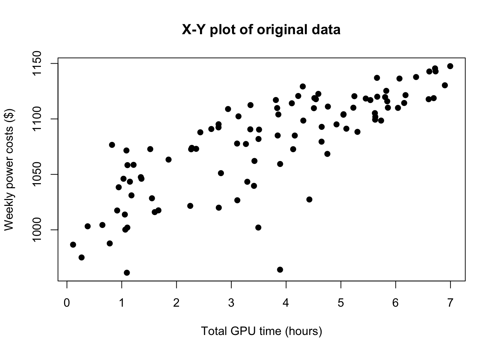
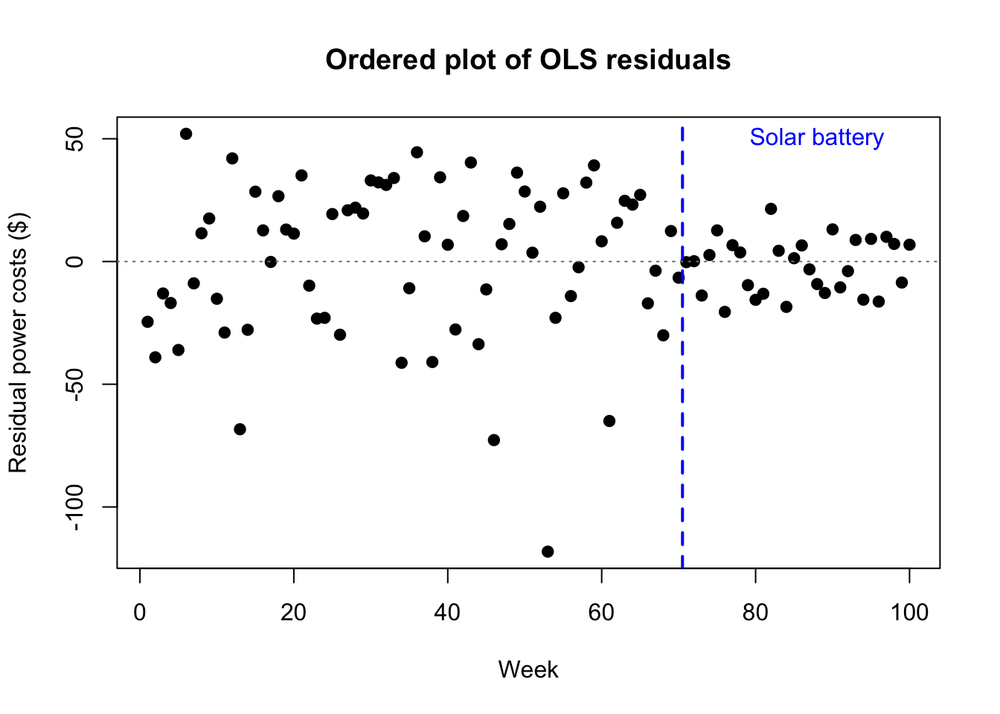
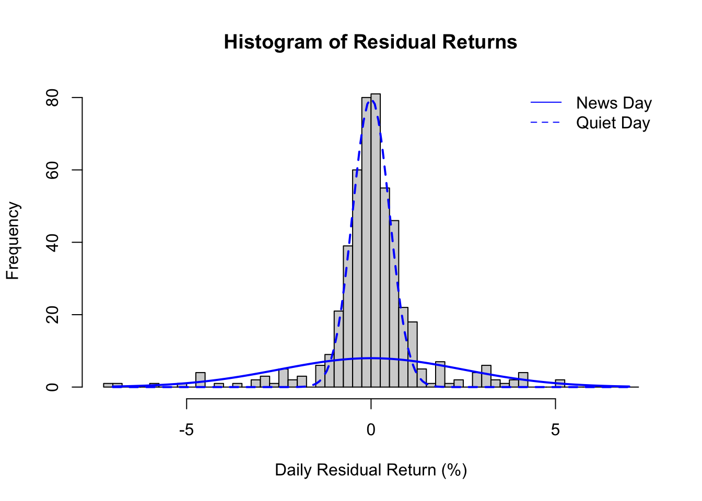
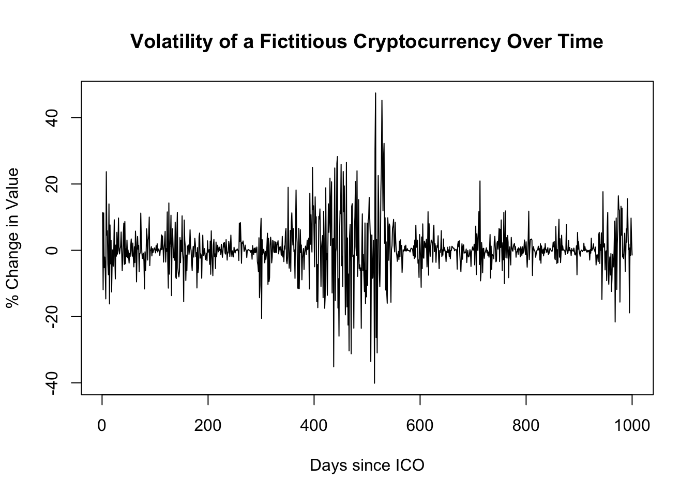
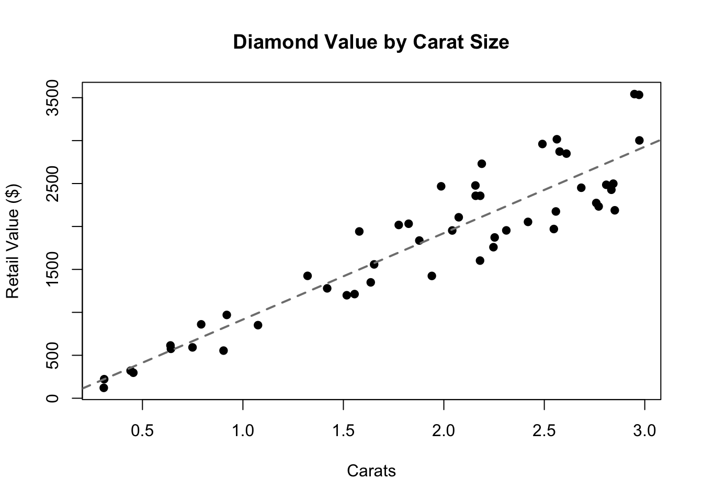
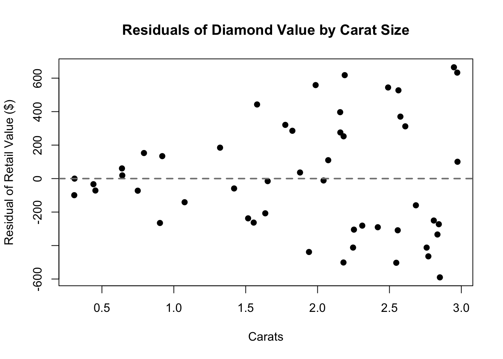

OLS regression models require homoskedasticity, meaning that each error \(\varepsilon_i\) is drawn from the same normal distribution with mean zero and a constant variance \(\sigma^2\). (Homoskedasticity comes from the Greek for “equally scattered”). Of course, each error will be a different size — some positive, some negative, some small, some large — but the probability of an error being a certain size will be the same for each observation. The troubling alternative to homoskedasticity is heteroskedasticity, in which different observations have differing error variances.1
Categories and illustrations of heteroskedasticity
Heteroskedasticity takes a few different forms:
Regime change. In a regime change, also called a structural break, the parameters of a model observed over time suddenly shift to new values, often as a result of a strong system shock. This can affect both the betas \(\boldsymbol{\beta}\) and the error variance \(\sigma^2\). For example, a company’s monthly electrical bills might be dependent on how much GPU processing time they use, but the errors might become permanently less volatile after they install solar battery storage systems.
Code
set.seed(1789)hetX <-sort(runif(100,0,7))hetE <-rnorm(100)hetY <-1000+20*hetX + hetE*rep(c(30,10),times=c(70,30))plot(hetX,hetY,main='X-Y plot of original data',xlab='Total GPU time (hours)',ylab='Weekly power costs ($)',pch=19)

Heteroskedasticity from a mixed distribution
Code
plot(lm(hetY~hetX)$residuals,main='Ordered plot of OLS residuals',xlab='Week',ylab='Residual power costs ($)',pch=19,)abline(h=0,col='grey50',lty=3)abline(v=70.5,lwd=2,lty=2,col='#0000ff')text(88,50,labels='Solar battery',col='#0000ff')

Heteroskedasticity from a mixed distribution
* *Mixed distributions.* In a regime change, the break point clearly separates the data and the distributions into a "before" and "after" period. But in other datasets, we see two (or more) error distributions which are mixed together such that each new observation can come from either (or any) error source. For example, a company’s stock might have one error variance on slow news days and a larger error variance on days where the market learns important information about the company.
hist(hetE,breaks=seq(-7.25,7.25,0.25),main='Histogram of Residual Returns',xlab='Daily Residual Return (%)')lines(seq(-7,7,0.1),dnorm(seq(-7,7,0.1),0,2.5)*0.1*500,lwd=2,col='#0000ff')lines(seq(-7,7,0.1),dnorm(seq(-7,7,0.1),0,0.5)*0.2*500,lwd=2,col='#0000ff',lty=2)legend(x='topright',col='#0000ff',lty=c(1,2),legend=c('News Day','Quiet Day'),bty='n')

* *Unconditional heteroskedasticity.* Error variances can grow and shrink in proportion to an unobserved variable, particularly in time series data. For example, speculative assets such as cryptocurrencies might enter periods of high and low volatility over the span of weeks (if examining daily data) or even seconds/minutes (if examining intraday data), and these differences in the error distribution would present as a smooth continuüm rather than a clean structural break.
Code
set.seed(1814)hetE <-rnorm(1000)*arima.sim(list(ar=0.993),n=1000)plot(hetE,main='Volatility of a Fictitious Cryptocurrency Over Time',xlab='Days since ICO',ylab='% Change in Value')

Heteroskedasticity not associated with the predictors
Conditional heteroskedasticity. Sometimes, the predictors themselves not only predict Y but also predict the size of the error variance σ^2. One common case would be datasets in which the errors are proportional, that is multiplicative and not additive. For example, the value of a diamond is usually based not just on the size of the stone, but on metrics such as the color, the brilliancy of the cut, and the lack of visible flaws. A small 0.5 carat diamond might be worth $400 ± $100 depending on the other factors, while a larger 2.0 carat diamond might be worth $2000 ± $500. The qualitative factors adjust the base value on a proportional basis, creating larger errors for larger stones.
Code
set.seed(1803)hetX <-runif(50,0.3,3)hetE <-runif(50,0.75,1.25)hetY <--200+1100*hetX*hetEplot(hetX,hetY,main='Diamond Value by Carat Size',xlab='Carats',ylab='Retail Value ($)',pch=19)abline(reg=lm(hetY~hetX),lty=2,lwd=2,col='grey50')

Heteroskedasticity associated with the predictors
Code
plot(hetX,lm(hetY~hetX)$residuals,main='Residuals of Diamond Value by Carat Size',xlab='Carats',ylab='Residual of Retail Value ($)',pch=19)abline(h=0,lty=2,lwd=2,col='grey50')

Heteroskedasticity associated with the predictors
Consequences of heteroskedasticity
The chief danger of using OLS regression in the presence of heteroskedasticity is simply that we will mislead ourselves about the error variance.
* We may be more confident or less confident than we should be that our betas are statistically significant and belong in the model
* All our confidence intervals (for predictions, mean responses, and the true values of the betas) will be narrower or wider than they should be
* We may view the errors as arithmetic/additive when they are really geometric/multiplicative
These are important hazards, but they need not be fatal. Heteroskedastic data will not bias our betas (just their standard errors), so we may remain reasonably confident in our point estimates, so long as we see no regime changes.
Identifying heteroskedasticity
There are usually two ways to identify violations of your modeling assumptions: (1) finding the right plots to highlight any potential problems, and (2) hypothesis tests specifically built to test the assumption in question. These two groups of methods pair well with each other, complementing the strengths and weaknesses of the other:
* Hypothesis tests are best at noticing subtle, aggregate trends. The human eye cannot easily tell when the errors are slightly heteroskedastic, but with even a moderate sample size a test can confirm such findings without a doubt.
* The human eye is best at noticing the presence of outliers and meaningful patterns. Tests aggregate the entire dataset into a single number without telling you why the data scored well or poorly. The human eye will notice individual data points that tell a story, or speak to unmodeled features in the data.
Diagnostic plots
There are several plots which help to reveal heteroskedasticity, and two of them were shown in the figures above:
Simply plotting the residuals in order might reveal structural breaks or periods of unconditional volatility
A histogram or density of the residuals might suggest the presence of a mixed distribution
Plotting the residuals as a function of the fitted values (or as a function of the predictor in simple regression) is the classic way to reveal conditional heteroskedasticity. Look for a “trumpet” shape to the residuals: a flared or triangular pattern.
Hypothesis tests
There are many tests which offer evidence on heteroskedasticity; I will provide details on one such test, and sketch out another.
The Breusch-Pagan test (1979) takes a very straightforward, two-stage approach to identifying heteroskedasticity associated with the predictors. (This test does not detect other types of heteroskedasticity!) First, we run the multiple regression model as usual, producing a set of residuals and a maximum likelihood estimate of the error variance:
Then we run a second-stage regression to see if the error sizes (represented by the squared, normalized residuals) can be meaningfully predicted by the original predictors.2 If we write the second regression equation using alpha \((\alpha)\) for the slopes and delta \((\delta)\) for the error term, it would be:
The Breusch-Pagan test uses likelihood-based methods to show that half the model sum-of-squares (SSM) of the second-stage model is distributed chi-squared, with degrees of freedom equal to the predictors in the second-stage model (\(k\)), under the null assumption of no heteroskedasticity.
The Breusch-Pagan test only examines heteroskedasticity which increases (or decreases) linearly with the predictors. It’s simple to implement, and available in all common statistical software, but may not catch more subtle forms of heteroskedasticity.
A related, slightly more comprehensive test is White’s test (1980). White’s test includes both all the original regression predictors, and their squares, and their cross-products in the second-stage regression. In this way, White’s test can measure both non-linear heteroskedasticity as well as possible misspecification of the model (i.e. cases where adding an additional predictor would help the model match OLS regression assumptions). Software packages can usually implement White’s test as well.
Correcting or mitigating heteroskedasticity
The right approach to mitigating heteroskedasticity depends heavily on what type of heteroskedasticity has been observed.
In the presence of a structural break, the easiest solution is to model the “before” and “after” periods separately (or drop one of them entirely), as these will now presumably show homoskedastic errors. In cases where a single model is necessary (either because of a phenomenon bridging both periods, or simply to preserve as large a sample as possible), more advanced modeling such as WLS or fGLS methods will be needed, both of which are beyond the scope of this document.
In the presence of a mixed distribution, the solutions are more difficult. If the two distributions can be easily disentangled, perhaps through a feature already in the data, then the subsamples can be modeled separately. But if not, we may have to accept some degree of misspecification. Standard errors and confidence intervals will be less reliable.
In the presence of heteroskedasticity not associated with the predictors, if we believe the heteroskedasticity to have time-series properties, then ARCH (auto-regressive conditionally heteroskedastic) and GARCH (generalized ARCH) models are a popular remedy. When the volatility is not time-based, we may need to consider WLS and fGLS models, including the use of Huber-White errors, sometimes called heteroskedasticity-consistent errors. All of these remedies are beyond the scope of this document.
In the presence of heteroskedasticity associated with the predictors, we may choose between both simple and complex solutions. In addition to the advanced WLS and fGLS methods mentioned above, we can often use a simple transformation to significantly align our residuals with the OLS assumptions. For example, if our errors are proportional rather than additive, then a log-transformation of the response will lead to a suitable OLS target.
In practice, we may wish to try a few different ways of controlling the variance. Log-transformations and square root-transformations are the most common, but we may also look at reciprocals (modeling \(1⁄\boldsymbol{y}\) instead of \(\boldsymbol{y}\)), rates, or other transformations and features.
Once we apply a potential solution, we can re-examine the new residuals using either the graphical methods or the hypothesis tests mentioned above. The new residuals may still fail a hypothesis test at our desired significance threshold, but we often can achieve a significant reduction in heteroskedasticity which should increase our confidence in the regression estimates, predictions, and confidence intervals.
Visualizer
While heteroskedasticity doesn’t necessarily bias the estimated betas, it can still pose severe challenges for regression. The data below show conditional heteroskedasticity: larger predictors are linked to larger errors (both positive and negative). Consider how accurate or inaccurate the stated “80% prediction interval” would be at different locations:
For small predictor values, the 80% prediction interval becomes too conservative, i.e. wider than needed
For large predictor values, much more than 20% of new data points would be expected to fall outside the 80% prediction interval
#| '!! shinylive warning !!': |
#| shinylive does not work in self-contained HTML documents.
#| Please set `embed-resources: false` in your metadata.
#| standalone: true
#| viewerHeight: 960
library(shiny)
library(bslib)
set.seed(1628)
hetdat <- data.frame(X=runif(200,min=0,max=10))
hetdat$Y <- 10 + 1.5*hetX + 0.5*hetX*rnorm(200)
hetLM <- lm(Y~X,hetdat)
hetint <- predict(hetLM,newdata=data.frame(X=seq(0,10,0.1)),
interval='prediction',level=0.8)
ui <- page_fluid(
tags$head(tags$style(HTML("body {overflow-x: hidden;}"))),
title = "80% CIs for predicted new observations",
fluidRow(sliderInput("x", "x-level of new observations", min=0, max=10, value=5, step=0.1)),
fluidRow(plotOutput("distPlot1")))
server <- function(input, output) {
index <- reactive({input$x*10+1})
output$distPlot1 <- renderPlot({
plot(NA,NA,xlab='X',ylab='Y',xlim=c(-0.1,10.1),ylim=c(0,40))
rect(xleft=input$x-0.1,ybottom=hetint[index(),2],
xright=input$x+0.1,ytop=hetint[index(),3],
border=NA,density=NA,col='#0000ff50')
points(hetdat$X,hetdat$Y,)})
}
shinyApp(ui = ui, server = server)
You will also see the spellings “homoscedasticity” and “heteroscedasticity” (with a ‘c’ instead of a ‘k’). It’s a matter of transliteration, without a clear right or wrong choice.↩︎
In fact, we need not use the original predictors. If you can hypothesize a functional form for your heteroskedasticity, you can use whichever variables you like in the second-stage regression.↩︎